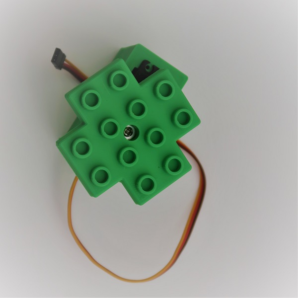
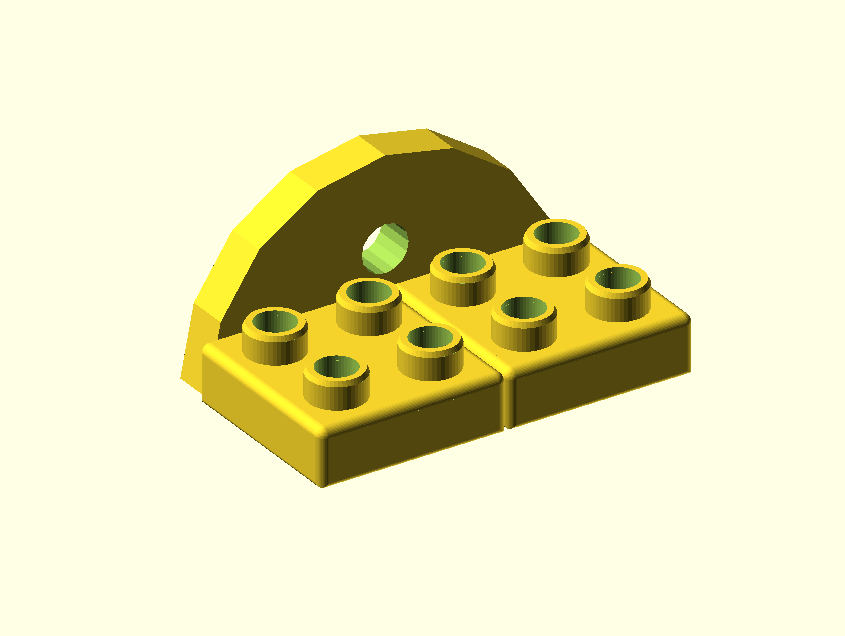

Krabičky pro servomotory

Krabičky jsou určeny pro servomotory typu (a velikosti) MG996. Krabičky spolu se servo motorem jsou pak kompatibilní s Lego Duplo. Pro ovládání servo motorů je potřeba řídící modul servo motorů.
Návod k výrobě
Držák pro servo - horizontální:
| Kategorie | Popis | Poznámka | Počet | Název | |
|---|---|---|---|---|---|
| 3D tisk | Krabička pro servo | 1 | servoMotor_box_horizontal.stl | ||
| 3D tisk |  | Držák na pohybující část | 1 | servoMotor_box_adapter_horizontal.stl | |
| Spojovací materiál |

|
Šroub do plastu B2.5X10 | 2 | ||
| Ostatní |

|
Servomotor včetně šroubů a hliníkového adaptéru (viz. obrázek). Libovolné servo s rozměry MG996. | 1 |
Držák pro servo - vertikální:
| Kategorie | Popis | Poznámka | Počet | Název | |
|---|---|---|---|---|---|
| 3D tisk | Krabička pro servo | 1 | servoMotor_box_vertical.stl | ||
| 3D tisk | Držák na pohybující část | 1 | servoMotor_box_adapter_vertical.stl | ||
| Spojovací materiál |
|
Šroub do plastu B2.5X10 | 2 | ||
| Ostatní |

|
Servomotor včetně šroubů a hliníkového adaptéru (viz. obrázek). Libovolné servo s rozměry MG996. | 1 |